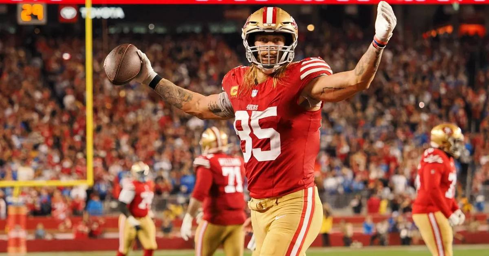

Happy National Tight Ends Day: Kittle's Holiday Takes Over Sunday
The eighth National Tight Ends Day lands on a full Sunday slate — and the position's biggest names are all in action, from the founder himself in Atlanta to Kelce under the lights in Seattle.

Today is the eighth National Tight Ends Day — the fourth Sunday in October, every year — and it lands on a full Sunday slate. The holiday started as a sideline joke: in Week 2 of the 2018 season, after 49ers tight end Garrett Celek scored against Detroit, Jimmy Garoppolo asked George Kittle, "What is it, like, National Tight Ends Day?" Kittle's answer — "Yeah, it's National Tight Ends Day. It's a holiday. Tight ends all over the league are scoring touchdowns" — became a real one, with the NFL fully on board.
The founder plays today
Kittle himself takes the field at 1:00 PM ET as San Francisco visits Atlanta, and he's bringing numbers worthy of his own holiday: 5 receiving touchdowns, tied for third in the entire NFL — not just among tight ends. The 49ers are banged up elsewhere (Bosa, Evans and Deebo all out), which only raises Kittle's share of the offence on his day.
The tight end leaderboard, entering today
• Isaiah Likely (Giants) leads all NFL tight ends in both receiving yardage and touchdown receptions entering Week 7, after a Weeks 4–6 surge. He plays at Houston at 1:00 PM ET.
• Trey McBride (Cardinals) is tied for the NFL lead in receptions (49) — with a wide receiver, Seattle's Jaxon Smith-Njigba. McBride hosts Denver at 4:05 PM ET.
• Kittle (49ers) and Likely are both tied at 5 receiving touchdowns, third-most in the league overall.
Today's tight end watchlist
• Paris, live now: Pat Freiermuth (Steelers) is already in action against the Saints at Stade de France.
• 1:00 PM ET: Kittle (at Falcons), Likely (at Texans), Mark Andrews (Ravens host the Bengals), and T.J. Hockenson — cleared concussion protocol and expected to play as Minnesota hosts Indianapolis.
• The cruel twist: Tyler Warren, the Colts' top tight end and their leader in targets, receptions and touchdowns, misses National Tight Ends Day — ruled out with a groin injury against the Vikings.
• 4:25 PM ET: Sam LaPorta (Lions) and Tucker Kraft (Packers) share the field in the NFC North shootout at Ford Field, the week's highest total (54.5).
• 8:20 PM ET, NBC: Travis Kelce closes the holiday under the lights as the 5-0 Chiefs visit Seattle on Sunday Night Football.
The position does everything — blocks, catches, leads — and today it gets the whole day. Watch the tight ends.
Sources: Pro Football Hall of Fame (National Tight Ends Day history), Sportradar 2026 season leaders, Wire Report (Likely leaderboard, October 23), team injury reports.
Gear up: Fanatics